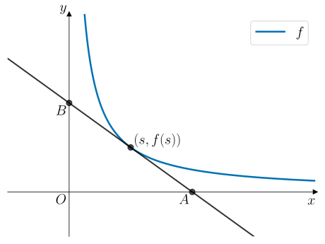

1. Tallregning#
Kunne bruke regnerekkefølgen
Kunne forklare hva et primtall er, og primtallsfaktorisere hele tall.
Kunne anvende brøkregler i regning
Kunne forenkle kvadratrøtter
Regnerekkefølgen#
Regnerekkefølgen kan brukes når vi skal regne ut et sammensatt uttrykk som består av tall. Regnerekkefølgen gir oss en tommelregel på hvilken rekkefølge vi kan bruke når vi skal regne ut uttrykket:
Parenteser
Eksponenter
Multiplikasjon og divisjon
Addisjon og subtraksjon
Vi starter med et eksempel:
Eksempel 1#
Regn ut
Vi følger regnerekkefølgen og regner ut uttrykket steg for steg:
Underveisoppgave 1#
Regn ut
\(112\)
Primtallsfaktorisering#
Et primtall er et heltall som kun kan deles med seg selv og \(1\). De første primtallene er
Et tall som ikke er et primtall er \(6\) siden vi kan skrive \(6 = 2\cdot 3\) som betyr at \(6\) er delelig både med \(2\) og \(3\).
Når vi skal forkorte brøker eller forenkle kvadratrøtter, må vi ofte kunne primtallsfaktorisere tall. Å primtallsfaktorisere et tall innebærer å skrive tallet som et produkt av primtallene det er bygget opp av. For å finne primtallsfaktorene til et tall, kan vi bruke et faktortre. La oss se på et eksempel:
Eksempel 2#
Primtallsfaktoriser \(36\).
{kind=link}

Vi lager et faktortre der vi starter med å dele med det laveste primtallet så mange ganger det er mulig. Deler vi \(36\) med \(2\) får vi \(18\). Deler vi \(18\) med \(2\) får vi \(9\).
Nå kan vi ikke dele videre med \(2\), så vi går videre til neste primtall som er \(3\). Vi deler \(9\) med \(3\) og får \(3\). Svaret vårt er nå et primtall som betyr at vi er ferdig!
Faktortreet til høyre viser hvordan vi kan systematisk ordne denne prosedyren. Primtallsfaktoriseringen av \(36\) er produktet av endepunktene på hver gren i faktortreet:
Underveisoppgave 2#
Primtallsfaktoriser \(60\).

Vi lager et faktortre for å primtallsfaktorisere \(60\).
Vi starter med det laveste primtallet som er \(2\). Deler vi \(60\) med \(2\) får vi \(30\). Deler vi \(30\) med \(2\) får vi \(15\).
Nå kan vi ikke dele videre med \(2\), så vi går videre til neste primtall som er \(3\). Deler vi \(15\) med \(3\) får vi \(5\). Svaret vårt er nå et primtall som betyr at vi er ferdig!
Faktortreet til høyre viser hvordan vi kan systematisk ordne denne prosedyren. Primtallsfaktoriseringen av \(60\) er produktet av endepunktene på hver gren i faktortreet:
Brøkregning#
Ofte jobber med vi brøker og vi foretrekker gjerne å oppgi svaret vårt som brøk fremfor å regne det ut som desimaltall. For å kunne regne med brøker må vi kjenne til hvordan vi legger sammen, trekker fra, ganger og deler brøker.
Legge sammen brøker#
Når to brøker skal legges sammen eller trekkes fra hverandre, må vi ha felles nevner i brøkene. Dette kan vi oppnå ved å utvide brøkene.
Vi tar et eksempel med tall:
Eksempel 3#
Regn ut
Ganging av brøker#
Når vi ganger to brøker, ganger vi tellerne med hverandre og nevnerne med hverandre.
Vi tar et eksempel med tall:
Underveisoppgave 4#
Regn ut
Deling av brøker#
Når vi deler en brøk med en annen, ganger vi den første brøken med den omvendte av den andre brøken.
Vi tar et eksempel med tall:
Eksempel 5#
Regn ut
Underveisoppgave 5#
Regn ut
Kvadratrøtter#
Kvadratroten \(\sqrt{a}\) av et tall \(a\), er hvilket tall \(b\) vi må opphøye i \(2\) for å få tallet vi tar kvadratroten av.
Definisjon: Kvadratrøtter#
Kvadratroten \(\sqrt{a}\) av et tall \(a\) er det tallet positive tallet \(b\) som må opphøyes i \(2\) for å få \(a\). Det betyr at
Eksempel 6#
Regn ut
Vi har at \(\sqrt{16} = 4\) siden \(4^2 = 16\).
Underveisoppgave 6#
Regn ut
Vi har at \(\sqrt{25} = 5\) siden \(5^2 = 25\).
Ved regning, kan vi i praksis bare bestemme kvadratrøttene for kvadrattallene
Vi er avhengig av en kalkulator for å beregne en tilnærmet verdi for alle andre kvadratrøtter. Men oftest ønsker vi å oppgi svaret eksakt. Da er det vanlig å forenkle svaret så mye som mulig. Da får vi bruk for følgende regneregel:
Produktregelen for kvadratrøtter#
For to tall \(a\) og \(b\) gjelder:
La oss se på et eksempel:
Eksempel 7#
Skriv kvadratroten så enkelt som mulig:
Underveisoppgave 7#
Skriv kvadratroten så enkelt som mulig:
Vi kan også forenkle kvadratroten av brøker.
Brøkregelen for kvadratrøtter#
For to tall \(a\) og \(b\) gjelder:
Vi tar et eksempel:
Eksempel 8#
Skriv kvadratroten så enkelt som mulig:
Underveisoppgave 8#
Skriv kvadratroten så enkelt som mulig